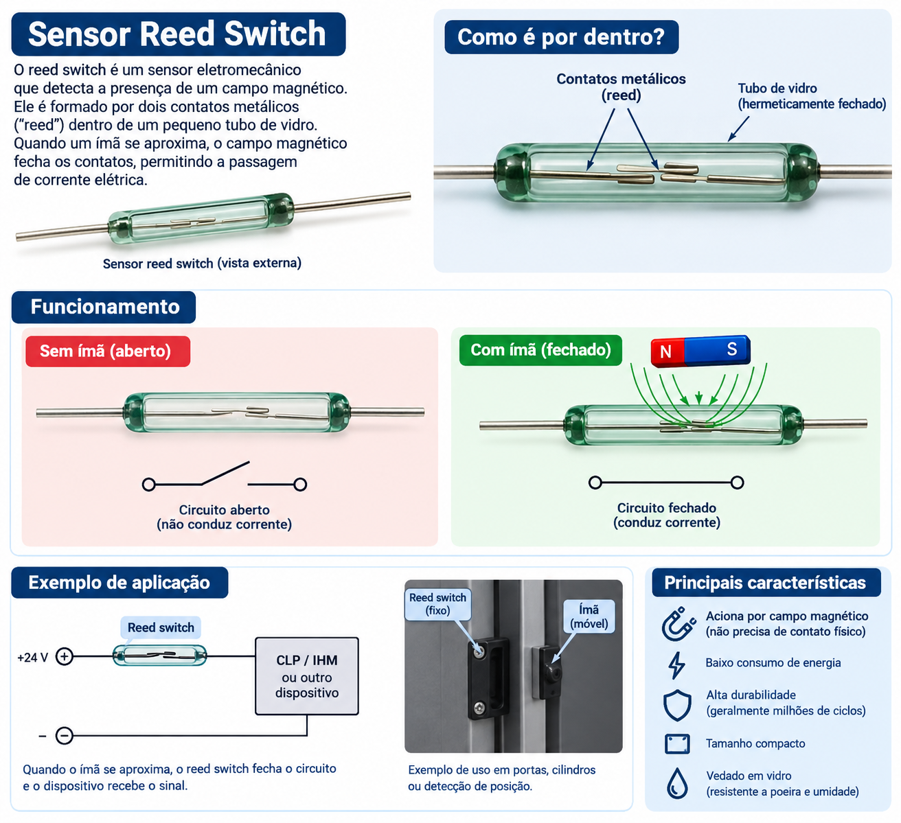

Sensor Reed Switch
Introdução e Definição do Sensor
O Reed Switch (ou interruptor de lâminas magnéticas) é um sensor eletromecânico utilizado para detectar a presença de campos magnéticos. Em sistemas automatizados, como a Bancada de Processos SMART 4.0, este dispositivo desempenha a função fundamental de sensor de fim de curso sem contato para cilindros pneumáticos, garantindo a detecção precisa das posições avançada e recuada dos eixos mecânicos.
- Módulo: Pneumática & CLP
- Atuador: Eixo Z Pneumático
- Controlador: Siemens S7-1200
Princípio de Funcionamento
Consiste em duas lâminas ferromagnéticas flexíveis (bulbos de reed) hermeticamente seladas dentro de uma cápsula de vidro preenchida com gás inerte. Quando um campo magnético externo (ímã do êmbolo pneumático) se aproxima, as lâminas são magnetizadas com polaridades opostas, atraindo-se fisicamente e fechando o circuito elétrico.

Arquitetura Interna e Modos de Operação
Contatos Abertos vs. Fechados por Atração Magnética
Estado Normal (Sem Ímã)
Na ausência de campo magnético, as lâminas metálicas permanecem separadas por sua elasticidade natural. O circuito encontra-se em estado Normalmente Aberto (NA), sem condução de corrente para o CLP.
Estado Comutado (Com Ímã)
A aproximação do pistão pneumático com anel magnético induz polos opostos nas pontas das lâminas. A força de atração supera a rigidez mecânica, unindo as pontas e enviando sinal 24 Vcc ao CLP.
Integração na Bancada de Processos SMART 4.0
Posição dos Sensores
Na estrutura industrial da Bancada de Processos, os sensores Reed Switch estão montados diretamente no corpo de alumínio do Atuador Pneumático do Eixo Z (item 5 da bancada). Eles identificam as posições limite de movimentação do manipulador responsável pela gravação das lâminas.
Mapeamento das Entradas Digitais do CLP (Siemens S7-1200)
Os sinais gerados pelos sensores Reed Switch entram no CLP através do cartão de entradas discretas configurado no TIA Portal:
| Elemento Mecânico | Sensor Instalado | Canal CLP | Endereço do Software | Função no Processo |
|---|---|---|---|---|
| Eixo Z Avançado | Reed Switch Pos. Baixa | Ia2 | %I0.2 | Confirma cilindro estendido para gravação |
| Eixo Z Recuado | Reed Switch Pos. Alta | Ia3 | %I0.3 | Confirma cilindro recolhido para transporte |
| Vacuostato Manipulador | Sensor de Pressão Magn. | Ia4 | %I0.4 | Confirma pega da lâmina por vácuo |
| Botão Start | Botão Pulsador NA | Ia7 | %I0.7 | Inicia o ciclo de automação |
Vantagens e Comparativo Industrial
A escolha do sensor Reed Switch para a bancada didática e aplicação industrial baseia-se em fatores técnicos essenciais para a confiabilidade da automação:
- Vedação Hermética: Por ser lacrado em ampolas de vidro, os contatos são imunes à poeira, umidade e óleos de lubrificação pneumática.
- Consumo Zero em Repouso: Por ser um componente passivo, não consome energia elétrica enquanto aguarda o acionamento.
- Custo-Benefício Integrado: Instalação direta nas ranhuras do perfil extrudado de cilindros ISO/VDMA sem necessidade de suportes complexos.
Conclusão Técnica
O Reed Switch atua como a interface primária de realimentação (feedback) de posição para o algoritmo do CLP S7-1200. Sem a sinalização confiável dos endereços %I0.2 e %I0.3, as sequências de movimentação lógica do Eixo Z e acionamento das válvulas solenoides não podem prosseguir com segurança.